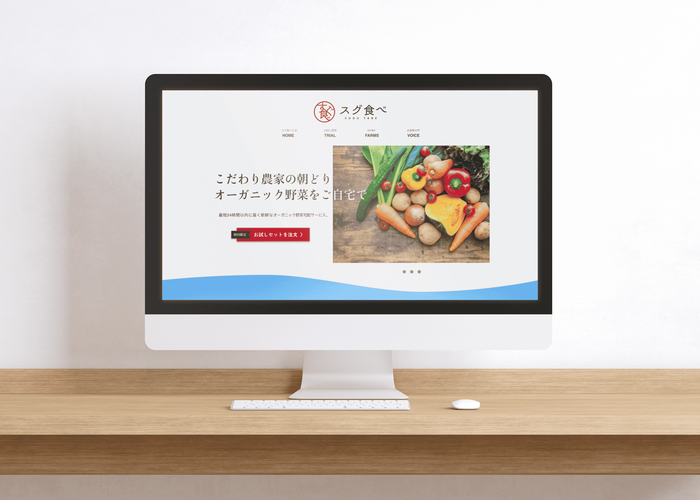

WORKS
-
ShinShibaura Motors Co., Ltd
New portfolio site production : [Planning / Design / HTML,CSS / jQuery,Javascript ]
I was in charge of creating the official website for ShinShibaura Motors Co., Ltd., which handles used car sales, auto maintenance, and insurance agency services.
I was in charge of planning, design and coding. It is a responsive site.株式会社 新芝浦自動車様
新規ホームページ制作 : [ 企画 / デザイン / HTML,CSS / jQuery,Javascript ]
中古車販売から自動車整備、保険代理店をされている新芝浦自動車様の公式ホームページ制作を担当させていただきました。
プランニングからデザイン、コーディングを担当いたしました。レスポンシブサイトとなっております。 -
Photographer TAISEI
New portfolio site production : [Planning / Design / HTML,CSS / jQuery,Javascript ]
I was in charge of creating a portfolio site for TAISEI, who is active as a photographer.
I was in charge of planning, design and coding. It is a responsive site.フォトグラファー TAISEI
新規ポートフォリオサイト制作 : [ 企画 / デザイン / HTML,CSS / jQuery,Javascript ]
フォトグラファーとして活動されているTAISEIさんのポートフォリオサイト制作を担当させていただきました。
プランニングからデザイン、コーディングを担当いたしました。レスポンシブサイトとなっております。 -
a piece of
New cafe site production : [Planning / Design / HTML,CSS / jQuery,Javascript ]
I was in charge of creating a new cafe site for high-end bread and cafe "a piece of".
I was in charge of planning, design and coding. It is a responsive site.a piece of by 僕ができること。
新規カフェサイト制作 : [ 企画 / デザイン / HTML,CSS / jQuery,Javascript ]
高級食パン＆カフェ「a piece of」様の新規カフェサイト制作を担当させていただきました。
プランニングからデザイン、コーディングを担当いたしました。レスポンシブサイトとなっております。 - 
Sugutabe
Fictitious LP site design : [Planning / Design / ]
I designed a fictitious LP site for a school assignment.
Except for the logo and text, all the photos and buttons were prepared and designed by myself.スグ食べ
架空LPサイトデザイン : [ 企画 / デザイン / ]
学校の課題で架空LPサイトのデザインを行いました。
ロゴやテキストを除き、写真やボタン等は全て自身で用意し、デザインしたものとなっております。